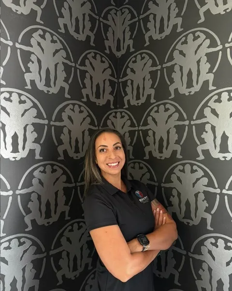

LisaScalzo
Twenty-plus years. Certified Nutrition Coach and Functional Movement Specialist.
I’ve been in the fitness industry for more than 20 years. My journey began while studying kinesiology in college, where a personal training course sparked what would become a lifelong passion and career.
Over the years, I’ve had the opportunity to wear many hats—from leading health clubs and developing coaching teams to working one-on-one with clients. While I’ve enjoyed the leadership side of fitness, my greatest passion has always been helping people move better, get stronger, and gain confidence in themselves.
Watching someone accomplish something they never thought possible—whether it’s eliminating pain, improving their health, weight loss, or simply feeling comfortable in their own body—is what continues to inspire me every day.
As an athlete, I experienced firsthand how life-changing great coaching can be. The guidance, accountability, and encouragement I received helped shape not only my athletic performance but also my confidence and mindset.
That experience inspired me to become the coach I once needed. Today, I’m passionate about helping people improve their strength, mobility, longevity, and overall quality of life. There’s nothing more rewarding than watching someone become stronger, move with greater confidence, and discover they’re capable of more than they ever imagined.
The biggest piece of advice I can give is simple: just get started.
So many people wait for the “perfect time.” They tell themselves they’ll begin after a vacation, once work slows down, or after another milestone. The truth is, there’s never a perfect time—there’s only today.
That’s why I encourage everyone to start with a complimentary consultation. We’ll talk about your goals, assess where you are today, and build a personalized plan that fits your lifestyle and sets you up for long-term success.
Fitness isn’t about quick fixes. It’s about building sustainable habits that you can maintain for years to come. Progress isn’t always linear, and setbacks are part of the journey. The people who achieve lasting results are the ones who stay consistent, trust the process, and keep showing up—even when life makes it tough to do so.
One of the highlights of my career was serving as a lead trainer in Washington, DC, where I had the opportunity to mentor and develop other coaches while working alongside an exceptional team of fitness professionals.
During that time, I also worked in a high-performance environment that included training Olympians. Helping elite athletes perform at their highest level while mentoring the next generation of coaches was an incredibly rewarding experience and one I’ll always be proud of.
Outside of coaching, I enjoy trail running, obstacle course racing, reading, and continually learning about movement, performance, and human potential. I’m naturally curious and always looking for ways to grow, both personally and professionally.
And whenever I get the chance, I’m perfectly happy catching up on some well-earned sleep.
Many of my colleagues refer to me as a mobility specialist because of my passion for biomechanics and functional movement. I believe moving well is the foundation for getting stronger, reducing pain, preventing injuries, and maintaining an active, independent lifestyle.
Throughout my career, I’ve worked with a wide range of clients, including athletes, military personnel, first responders, active older adults, and women over 40. As a woman over 40 myself, I understand the unique challenges of balancing fitness with the demands of a career, family, and everyday life. That’s why I’m especially passionate about helping women build strength, improve their health, and feel confident at every stage of life.
No matter a client’s starting point, my coaching philosophy is always the same: meet people where they are, understand their goals, and create a personalized plan that helps them move, feel, and perform at their very best.
In addition to more than two decades of coaching experience, I’m a Certified Nutrition Coach and a Certified Functional Movement Specialist, allowing me to take a comprehensive approach that combines exercise, movement quality, and nutrition to help clients achieve lasting results.
Chavely Castro-Amores →